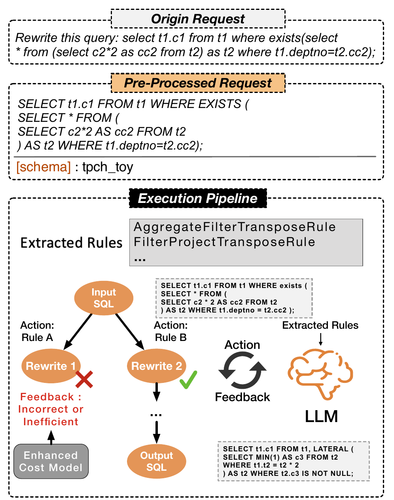

<!-- Slide 8 — Cas d'usage 3 : SQL Query Rewrite -->
<div class="slide">
    <div class="slide-content">
        <span class="slide-section-label">Cas d'usage 3</span>
        <h2>Réécriture automatique de requêtes SQL</h2>
        <div class="two-col">
            <div>
                <div class="callout-warning">
                    Une requête SQL <strong>correcte</strong> peut être inefficace — la réécrire manuellement requiert une expertise avancée.
                </div>
                <ol class="steps">
                    <li class="fragment" data-fragment-index="1"><strong>Extraction de règles</strong> — LLM extrait depuis manuels et papiers (<code>FilterProjectTransposeRule</code>…)</li>
                    <li class="fragment fade-left" data-fragment-index="2"><strong>Application</strong> — règles applicables sélectionnées, candidats générés</li>
                    <li class="fragment fade-left" data-fragment-index="3"><strong>Évaluation</strong> — équivalence sémantique + coût d'exécution estimé</li>
                    <li class="fragment fade-left" data-fragment-index="4"><strong>Sélection</strong> — subquery imbriquée → <code>LATERAL</code> : même résultat, moins coûteux</li>
                </ol>
            </div>
            <div>
                <div class="figure-box">
                    
                    <figcaption>Pipeline LLMDB pour la réécriture SQL</figcaption>
                </div>
            </div>
        </div>
    </div>
</div>
